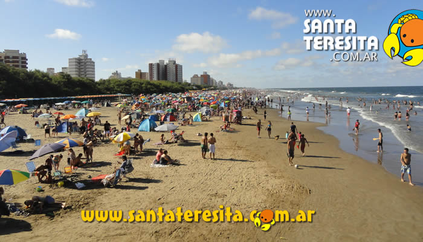

La réplica más precisa que existe en el mundo de la Santa María, la embarcación utilizada por Cristóbal Colón, se encuentra ubicada en la Avenida Costanera entre las calles 39 y 40. Este icónico lugar es una parada obligatoria para los turistas que visitan Santa Teresita y las playas cercanas, quienes aprovechan para tomarse fotos con ella.
El muelle de Santa Teresita es uno de los más grandes del Partido de La Costa y se encuentra en la Avenida Costanera y la Calle 38. Los visitantes pueden alquilar equipos de pesca como mediomundos y cañas. El muelle fue construido a mediados de 1947 con madera de curapay paraguayo, que fue transportada desde Dolores hasta San Clemente en camiones y luego a Santa Teresita a través de la playa.
Santa Teresita cuenta con más de 3 kilómetros de playas amplias y perfectas para disfrutar en familia, así como para practicar una gran variedad de deportes náuticos y playeros, como jet-sky, paseos en lancha, surf, windsurf, kitesurf, cuatriciclos, vóley, fútbol playero, entre otros. También es posible caminar por la pasarela junto al mar y alquilar carpas en temporada.
Durante el día, el centro de Santa Teresita es muy concurrido y especialmente durante las noches de temporada alta, cuando las calles 2 y 32 se convierten en peatonales desde las 20:00 hasta las 02:00 horas. Si recorre la Calle 2, encontrará una gran variedad de negocios que ofrecen desde alfajores regionales, recuerdos y ropa, hasta juegos para niños, cibercafés, bares, parrillas, pizzerías, restaurantes, teatros, librerías, tiendas de deportes y galerías comerciales, entre otros.
Camino del Jagüel te ofrece la posibilidad de disfrutar de un excelente paseo en medio de un entorno natural único. La excelente armonía entre el bosque y los locales comerciales te brindan el marco ideal para encontrar la serenidad que necesitas y poder comunicarte con todo aquello que deseas. Ubicado en Boulevard La Alameda y Av. Entre Rios - Santa Teresita Sobre el Monte.
El Galponcito de Ayer alberga una gran cantidad de recuerdos de antaño que puedes disfrutar de manera gratuita los sábados y domingos de 10 de la mañana a 1 de la tarde. Allí podrás encontrar una gran variedad de objetos de los años 50 y 60, como automóviles y motocicletas, diarios y revistas, instrumentos musicales, posters y muchas otras cosas interesantes para explorar.
El museo, el cual abrió sus puertas en marzo del año 2016, consta de tres salas que reviven la historia de la ciudad costera. Una de estas salas exhibe objetos y pinturas alusivas al transcurso histórico desde 1950 hasta la actualidad, dividido por décadas. Sin embargo, en este momento se encuentra cerrado al público.
El Museo Temático de Malvinas se encuentra en la sección superior de la Terminal de Ómnibus de Santa Teresita, y su área de exposición ocupa aproximadamente 600 metros cuadrados. El espacio fue otorgado en comodato por el ex alcalde Juan Pablo de Jesús a la Casa de Veteranos de Guerra.
Ubicada en la intersección de la Avenida 41 y la Calle 10, se encuentra una encantadora plaza que alberga una famosa escultura turística llamada "Monumentango", como parte del Paseo Turístico de la Plaza del Tango.
Se encuentra en Av. 41 y Calle 1, Santa Teresita, La Costa. Poseé 6 toboganes, se destaca un imponente Kamikaze y 2 toboganes de rulos, además un Kamikaze mas chico y dos rulos mas cortos. Encontrarás una plaza de agua con hongos acuáticos y toboganes inflables para niños.
El Parque Acuático Poseidón se inauguró el 31/1/2012, es un emprendimiento que tiene como finalidad enmarcar en este bello espacio natural, donde se observan árboles variados y vegetación atractiva, este proyecto que ya se luce en parte, como un futuro espacio recreativo, cuyo objetivo primordial es la diversión y el entretenimiento acuático para las familias, en un contexto ambientado en Poseidón, Diós griego del mar.